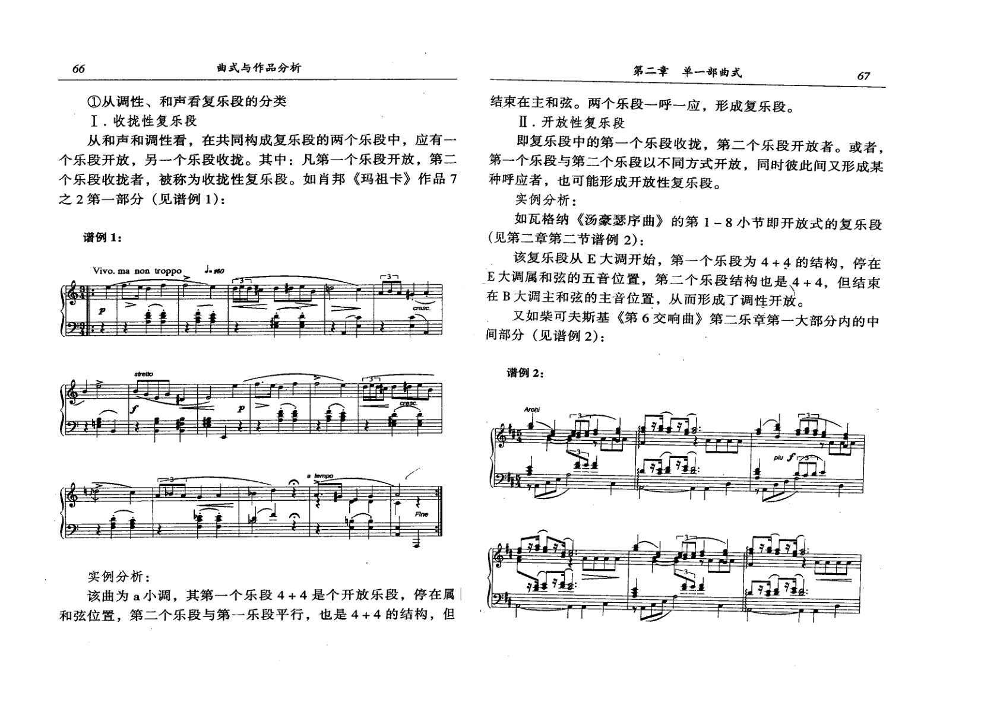
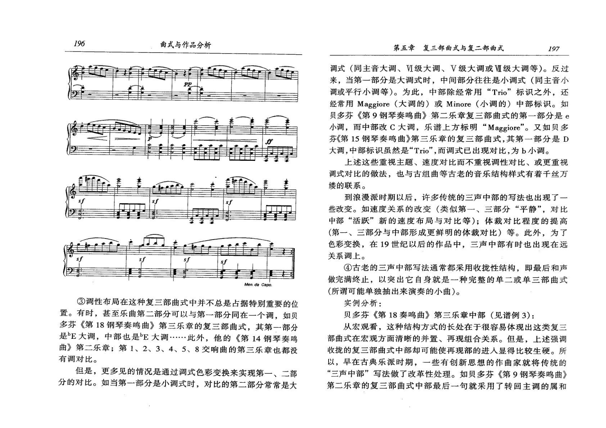

李吉提《曲式与作品分析》
把音乐表现手段、结构功能与曲式体系联系起来，强调材料发展、调性布局和作品分析的整体性。
页码为 PDF 物理页。以下仅收录理论手册与案例实际引用的页面；页图保留整版，OCR 文本用于检索，不能替代读谱。
PDF p.40
李吉提
本页在理论手册中的引用
- 论点乐句与乐段
OCR 检索文本（仅辅助检索，谱例以影印为准）
66 曲式与作品分析 第二章单一部曲式 67 ①从调性、和声看复乐段的分类 结束在主和弦。两个乐段一呼一应，形成复乐段。 I.收拢性复乐段 Ⅱ.开放性复乐段 从和声和调性看，在共同构成复乐段的两个乐段中，应有一 即复乐段中的第一个乐段收拢，第二个乐段开放者。或者， 个乐段开放，另一个乐段收拢。其中：凡第一个乐段开放，第二 第一个乐段与第二个乐段以不同方式开放，同时彼此间又形成某 个乐段收拢者，被称为收拢性复乐段。如肖邦《玛祖卡》作品7 种呼应者，也可能形成开放性复乐段。 之2第一部分（见谱例1)： 实例分析： 如瓦格纳《汤豪瑟序曲》的第1－8小节即开放式的复乐段 谱例1： （见第二章第二节谱例2）： 该复乐段从E大调开始，第一个乐段为4+4的结构，停在 Vivo.ma non troppo E大调属和弦的五音位置，第二个乐段结构也是4+4，但结束 在B大调主和弦的主音位置，从而形成了调性开放。 又如柴可夫斯基《第6交响曲》第二乐章第一大部分内的中 间部分（见谱例2)： 谱例2： 实例分析： 该曲为a小调，其第一个乐段4+4是个开放乐段，停在属 和弦位置，第二个乐段与第一乐段平行，也是4+4的结构，但
PDF p.105
李吉提
本页在理论手册中的引用
- 论点复三部曲式
OCR 检索文本（仅辅助检索，谱例以影印为准）
196 曲式与作品分析 第五章复三部曲式与复二部曲式 197 调式（同主音大调、V级大调、V级大调或V级大调等）。反过 来，当第一部分是大调式时，中间部分往往是小调式（同主音小 P 调或平行小调等）。为此，中部除经常用“Trio”标识之外，还 经常用Maggiore（大调的）或Minore（小调的）中部标识。如 贝多芬《第9钢琴奏鸣曲》第二乐章复三部曲式的第一部分是e 小调，而中部改C大调，乐谱上方标明“Maggiore”。又如贝多 芬《第15钢琴奏鸣曲》第三乐章的复三部曲式，其第一部分是D 大调，中部标识虽然是“Trio”，而调式已出现对比，为b小调。 上述这些重视主题、速度对比而不重视调性对比、或更重视 调式对比的做法，也与古组曲等古老的音乐结构样式有着千丝万 缕的联系。 到浪漫派时期以后，许多传统的三声中部的写法也出现了一 些改变。如速度关系的改变（类似第一、三部分“平静”，对比 中部“活跃”新的速度布局与对比等）；体裁对比程度的提高 （第一、三部分与中部形成更鲜明的体裁对比）等。此外，为了 色彩变换，在19世纪以后的作品中，三声中部有时也出现在远 关系调上。 ④古老的三声中部写法通常都采用收拢性结构，即最后和声 做完满终止，以突出它自身就是一种完整的单二或单三部曲式 Men.daCapo （所谓可能单独抽出来演奏的小曲）。 ③调性布局在这种复三部曲式中并不总是占据特别重要的位 实例分析： 置。有时，甚至乐曲第二部分可以与第一部分同在一个调，如贝 贝多芬《第18奏鸣曲》第三乐章中部（见谱例3)： 多芬《第18钢琴奏鸣曲》第三乐章的复三部曲式，其第一部分 从宏观看，这种结构方式的长处在于很容易体现出这类复三 是E大调，中部也是E大调·…..··此外，他的《第14钢琴奏鸣 部曲式在宏观方面清晰的并置、再现组合关系。但是，上述强调 曲》第二乐章；第1、2、3、4、5、8交响曲的第三乐章也都没 收拢的复三部曲式中部却可能使再现部的进人显得比较生硬。所 有调对比。 以，早在古典乐派时期，一些有创新思想的作曲家就将传统的 但是，更多见的情况是通过调式色彩变换来实现第一、二部 “三声中部”写法做了改革性处理。如贝多芬《第9钢琴奏鸣曲》 分的对比。如当第一部分是小调式时，对比的第二部分常常是大 第二乐章的复三部曲式中部最后一句就采用了转回主调的属和